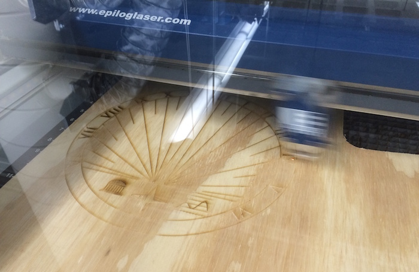

I wanted to learn how sundials work and I realized the only way to truly understand how they function is to try to make one myself.
After extensive research on https://en.wikipedia.org/wiki/Sundial and some other sites, I found out most of what I needed to know, but I was constantly going back and making adjustments because there were factors I didn't account for.
I laser cut and engraved the base and waterjetted the gnomon (because the plywood was so thick it was hard to laser cut).